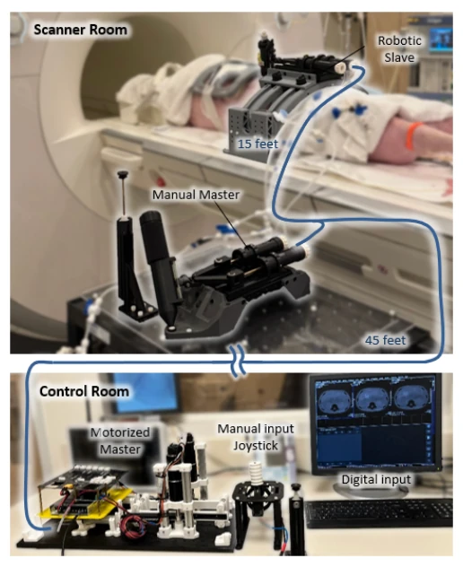
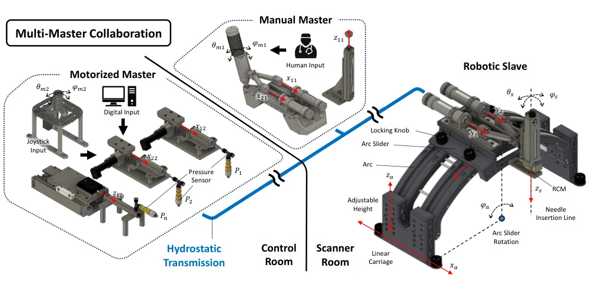
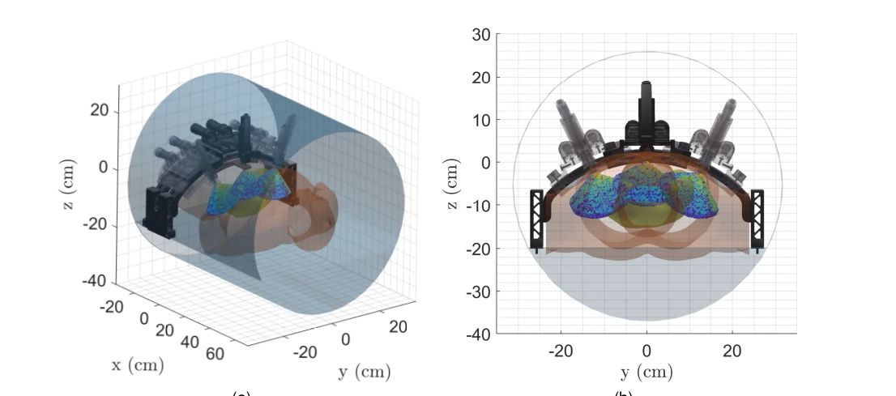
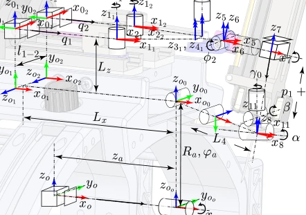
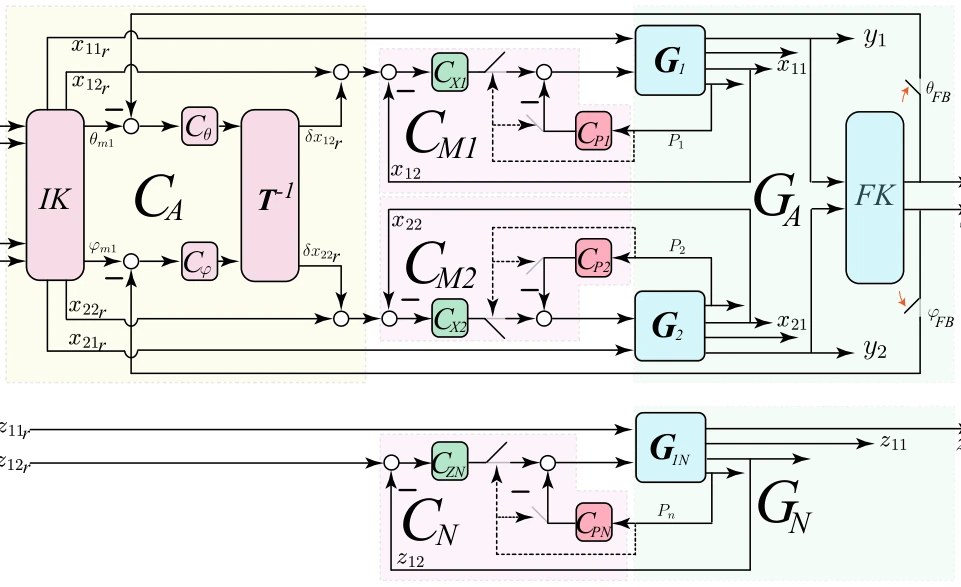
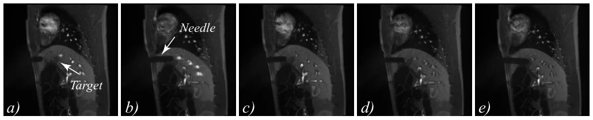
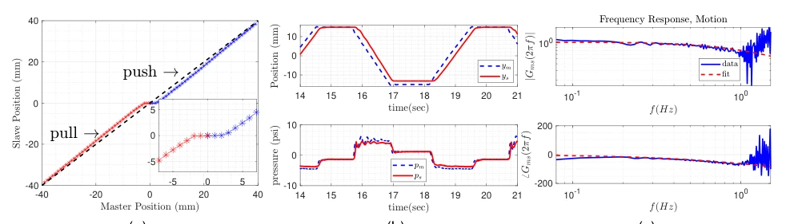
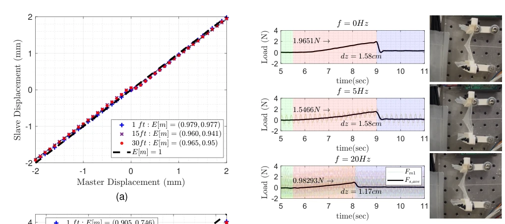
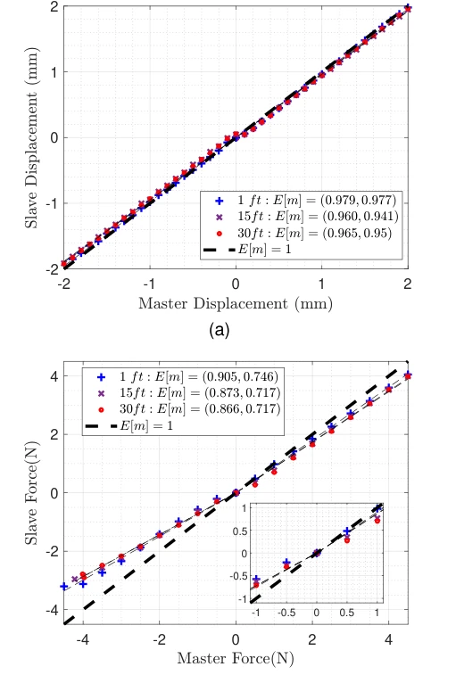

This paper is more a triumph of precision mechanical engineering than Embodied AI. The authors developed an MRI-compatible hydraulic master-slave robot, emphasizing "safety" and "force feedback". The highlight is that hydraulic transmission solves the motor interference issue in MRI and enables human-robot collaboration. However, there are numerous drawbacks: the control logic is essentially traditional PID plus simple logic, far from true "intelligence". The so-called "digital master" is merely motor assistance, showing no trace of deep learning or reinforcement learning. Experiments were limited to live pigs, and clinical translation remains a long way off. Nevertheless, for minimally invasive surgery in specific scenarios, this hardware design is indeed robust, though the software part is somewhat thin, feeling as if the robot is wearing an MRI protective suit while retaining an old-fashioned brain.
In liver and kidney tumor treatment, MRI-guided puncture offers better soft tissue contrast than CT/ultrasound, but the environment is harsh. Existing robots are either unsafe (containing ferromagnetic materials), have artifacts [10], or rely on pneumatic/piezoelectric leading to complex control or noise [15]-[21]. Especially pneumatic systems require high-pressure valves, and piezoelectric may introduce image noise [23]. Embodied robots are affected by respiratory motion [27]-[30]. This paper aims to solve space limitations, safety, and force feedback issues within the MRI closed cavity, achieving human-robot collaborative remote puncture, avoiding complex control of traditional RCM mechanisms or respiratory disturbances.

Fig. 1: (Top) Manual master manipulator teleoperates the robotic slave mechanism in from the scanner room. (Bottom) Digital master manipulator parallelly drives the robot slave from the control room.

Fig. 2: Multi-Master collaboration leverages motor-operated and human operated master angulation and insertion mechanisms for remote needle angulation and insertion via table-mounted hydrostatic, multi-DOF robot.
The system adopts hydraulic static transmission, where the master (manual/digital) drives the slave via a fluid network. The slave has 2+1 degrees of freedom, containing needle angle adjustment and needle insertion modules. Angle adjustment uses a high-impedance elastomer piston, insertion uses a low-friction graphite piston, ensuring force transparency and motion transmission. Architecturally, the fluid network transmits between the control room and scan room, eliminating bedside motors. The control layer supports multi-master collaboration: manual input superimposed with digital high-frequency vibration assists tissue penetration; in case of fault, the digital master absorbs pressure waves to form a virtual fixture; angle compensation is performed combining IMU feedback. Kinematics are based on a four-bar linkage, fixing the center of motion (RCM), avoiding respiratory displacement. Specifically, the four-bar structure is modeled via modified DH parameters to achieve inverse kinematics solution. The digital master adjusts pressure via a servo mechanism to achieve virtual fixture protection of tissue. The system precisely describes the kinematic relationship between the four-bar linkage and serial arm via a modified DH parameter table, and inverse kinematics uses the BFGS algorithm to solve nonlinear equations. Fluid network dynamics are characterized by a 2-input 4-output model, ensuring stability under long-distance transmission.

Fig. 3: (3a) Isometric view of scaled patient inside 60-cm bore with 3 overlayed angular positions, φa = −20, 0, 20 degrees. (3b) Axial view of robot manipulator tool tip density map overlayed for 3 fixed arch, angular positions.

Fig. 4: Kinematic diagram of serial-parallel slave needle insertion robot with associated modified-DH table in table III.

Fig. 5: Control architecture for master-slave teleoperated needle robot includes internal servo-mechanisms (CMi, CN) for fluid actuator fault-triggered pressure regulation, (CP i), and motion tracking, CXi, CZN. Similarly, an output angle regulation controller (CA) contains motion compensation and coordinate transformation, (Cθ, Cφ, IK, T −1).
Tested in a 60cm MRI cavity, SNR difference is only 0.59%, artifacts are negligible. Live pig experiments verify puncture paths, showing real-time angle adjustment to hit targets. Force feedback tests show insertion axis force transparency >85%, transmission bandwidth is about 2.25Hz. In multi-mode control experiments, superimposed 20Hz vibration reduces penetration peak force by 25-50%. Virtual fixture function automatically adjusts when pressure exceeds limits. Ablation experiments are not explicitly mentioned, but force and deflection changes were compared with and without assistance mode. Overall proves hardware feasibility, but intelligence level is limited.

Fig. 6: a) Needle is inserted into pig about 5-7 cm depth from the skin. b) Needle is slowly advanced forward as it nears the target. Needle reaches target depth and image clearly shows it missed the target’s centroid. c) Needle is retracted slightly and angle is adjusted in-situ to coincide needle tip with target centroid. (d) Needle angle is adjusted to realign with target path. (e) Needle advances and reaches the target centroid.

Fig. 7: 7a The motion transmission linear correlation of 0.945 from master to slave for a range of 40 mm in the compression direction and 0.975 in the tension direction.7b Dynamic motion transmission of master to slave for a 30mm pk-pk, T=5sec trapezoidal waveform. The corresponding water pressure transmission in subplot B.7c Frequency response of angulation fluid actuators generated by a band-limited chirp signal f ∈[0.1, 1]Hz. A single-pole filter with 0.1 second delay was used to fit the data.

Fig. 9: Add-on rapid oscillation at different frequencies. Average peak force and deflection measured by master dis- placement. (Green) Pre-insertion (Red) Deflection and (Blue) Penetration.

Fig. 8: 8a Shows the correlation between master and slave load-less motion transmission for a range of ±40 mm. 8b shows the linear master-slave force correlation for the needle insertion module in the push and pull directions.